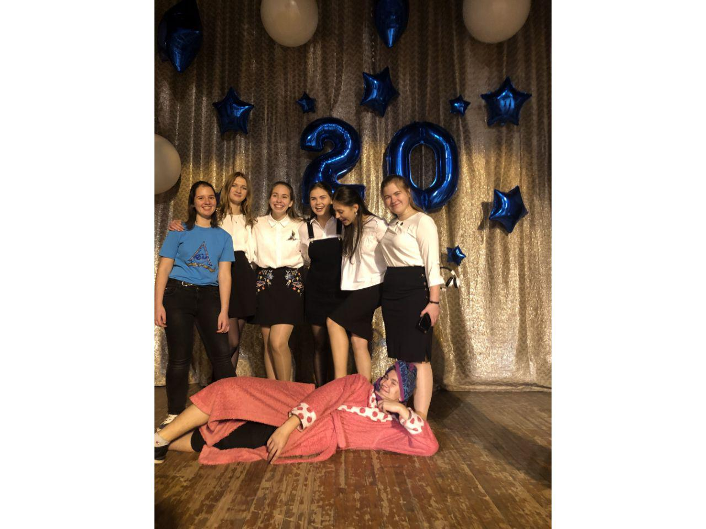
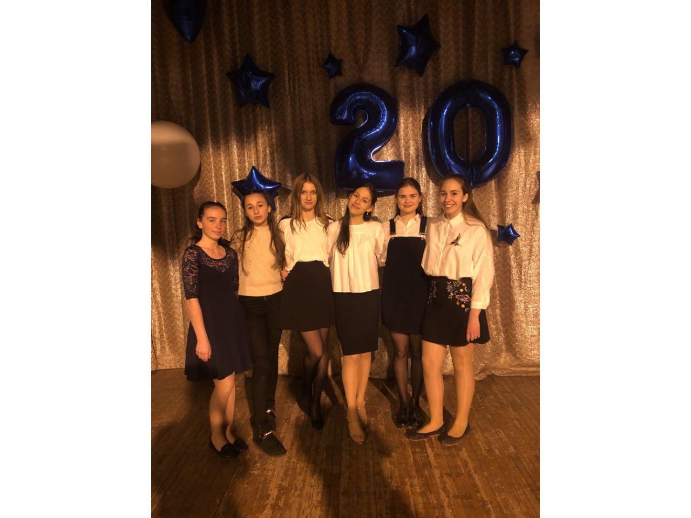
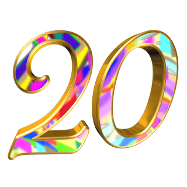
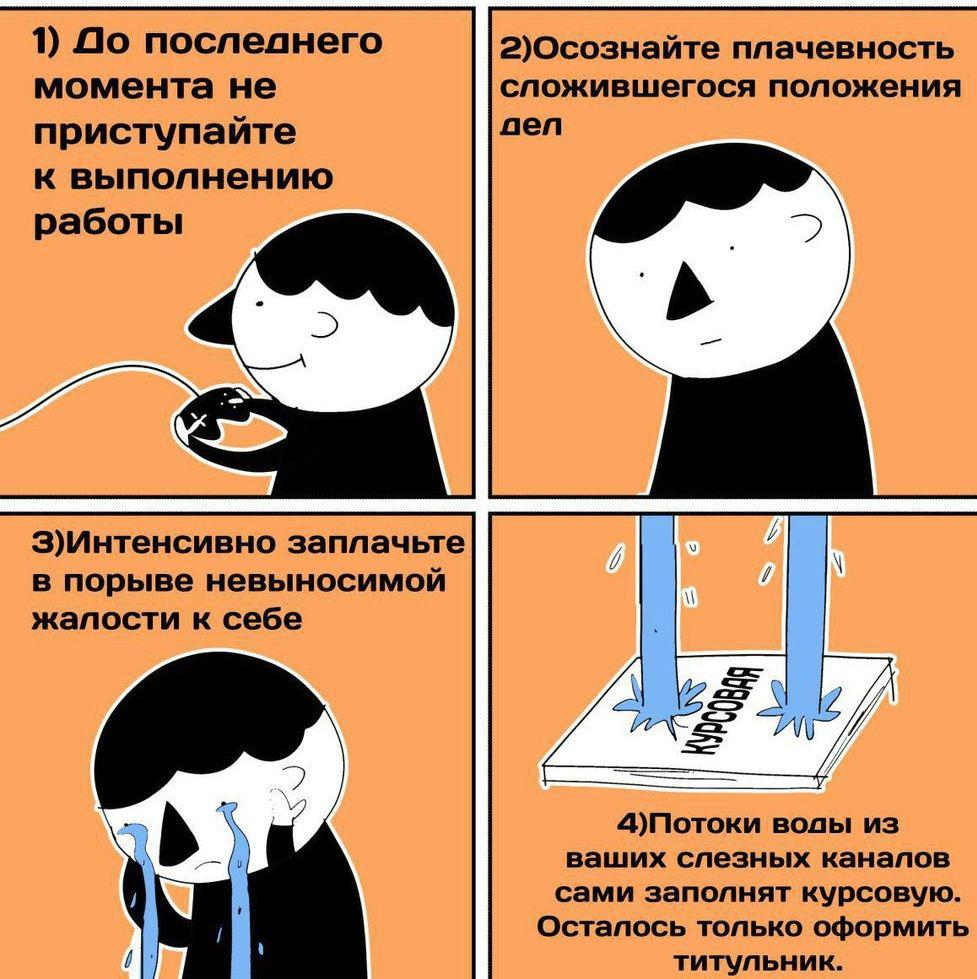

Ноябрь последний осенний месяц, но это не делает его скучным или грустным. Первые приготовление перед зимой и конечно же учеба. В 2018 году ДОЛИФМП исполнилось целых 20 лет ! Праздник 20-ти летия прошел "на ура!" В нем приняли участие не только все лицеисты с 8 по 11 класс, но и выпускники.
  1. Самым наверное главным этапом, является выбор направления МАНовской работы, так как секций в МАНе достаточно много, и ты можешь выбрать, что тебе угодно.
2. После 1-го пункта следует выбор темы, и конечно же, обсуждение твоего выбора с научным руководителем.
3. Поиск информации для работы, подготовка экспериментов, часы проведенные в поисках нужной информации среди Интернет-источников, книг и научной литературы.
4. Оформление работы - один из самых важных пунктов, так как не хочется терят баллы из-за неправильно оформленной работы.
5.Защита работы в лицее.
6. Паника, нервы, разочарование. Это подготовка к участию на области. А так же сбор документов, которые необходимы для участия.
7.Подготовка к МАНовской контрольной работе.
8.Написание контрольной работы. Паника, нервы, разочарование.
9.Защита работы перед членами жюри на области.
P.S: совпадения количества этапов работы МАН и кругов ада по Данте случайность .